Wonder
Asking odd questions, collecting references and finding the angle nobody has tried yet.
- Concepts
- Moodboards
- Storylines
Portfolio
Hi, I'm Javeria Rehman, a UX/UI designer. I turn rough ideas into clear, friendly products across mobile, web and design systems, with developers in mind from the first sketch. Scroll to follow the line.
About
I'm a UX/UI designer whose main strength is creativity. I've worked on site as a designer at Melior since July 2025, and before that I freelanced for a year.
I studied computer science for my BS, so I understand the developer's point of view. It helps me design things that are easier to build and hand off.
I've also worked with design systems and built my own from the ground up. You'll find it, along with my app and web designs, in the work below.
Skills
Asking odd questions, collecting references and finding the angle nobody has tried yet.
Pen to paper, then pixels. Rough shapes first, so the idea survives the polish.
Motion, colour and tiny details that make a finished piece feel alive.
Tools
Layouts, systems and prototypes.
Sketching screens and websites in code-ready files.
A thinking partner for ideas, copy and code.
Work
Gambit is a mobile HR management app for employees and administrators. It brings time tracking, leave requests, calendars, notifications and recruitment into one product, replacing scattered chats and spreadsheets. I designed the experience end to end, from sign-in and daily workflows to managing job postings and candidates.
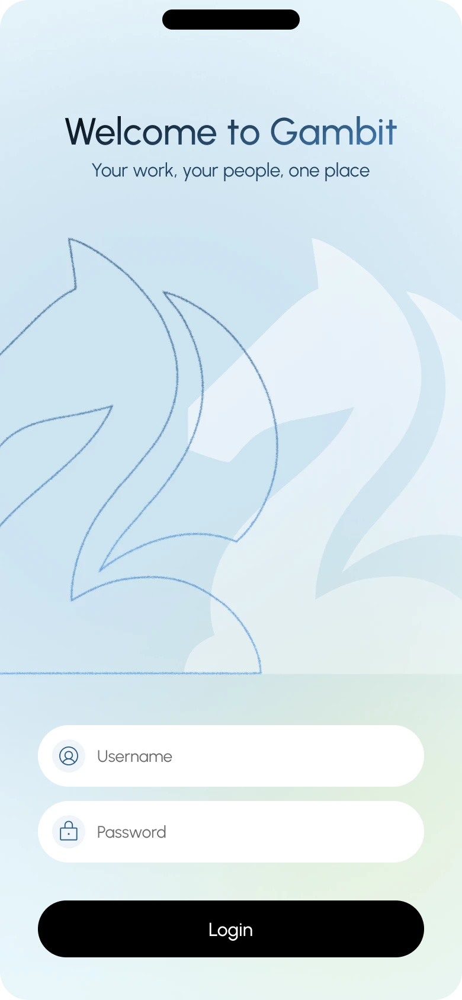
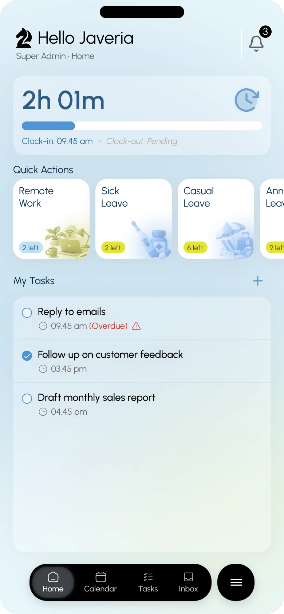
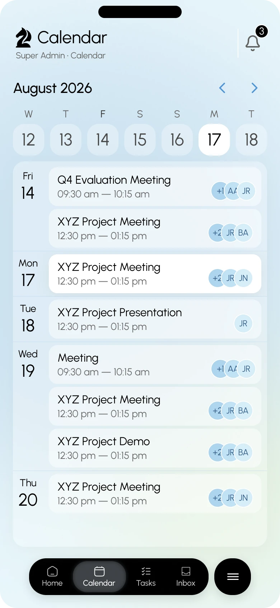
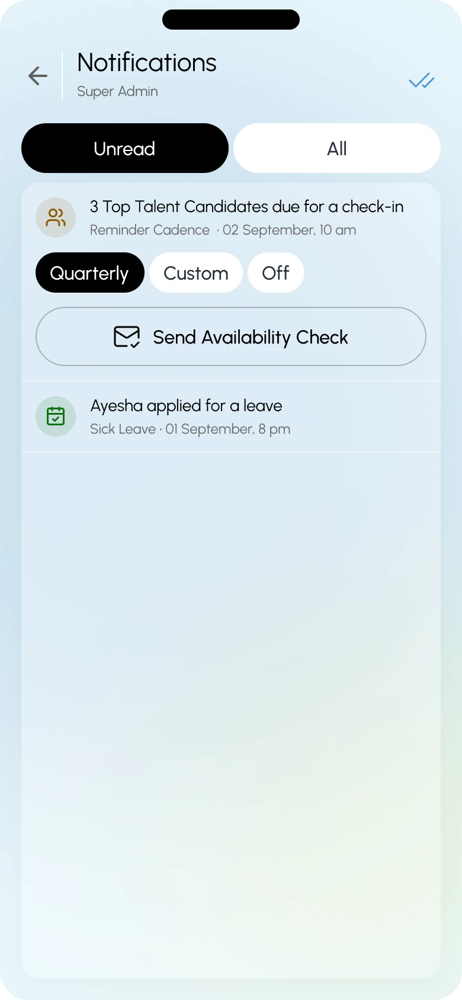
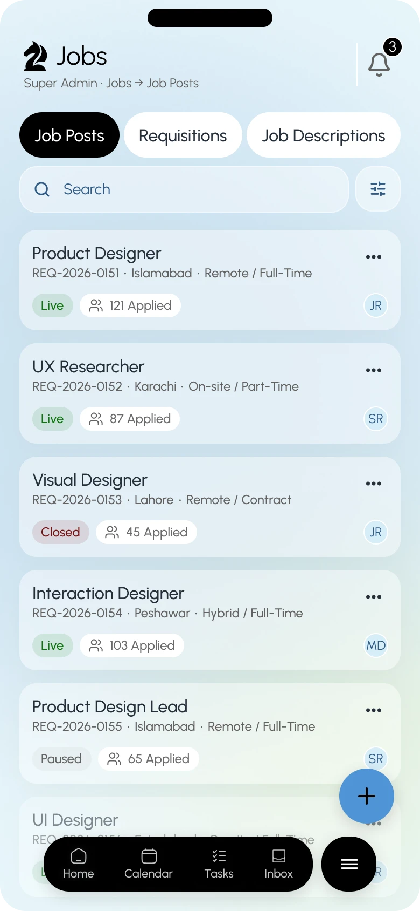
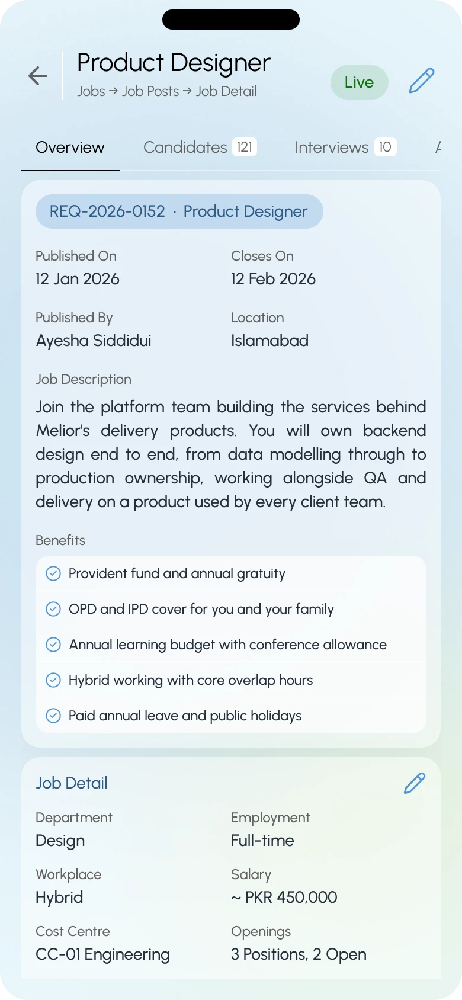
Lavender is a design system I designed and built from scratch. It documents the colour palette, typography and a library of ready-to-use components such as form fields, file upload, date picker, cards, accordions, pagination and navigation. Together they give designers and developers one shared reference, so interfaces stay consistent and are faster to build and hand off.
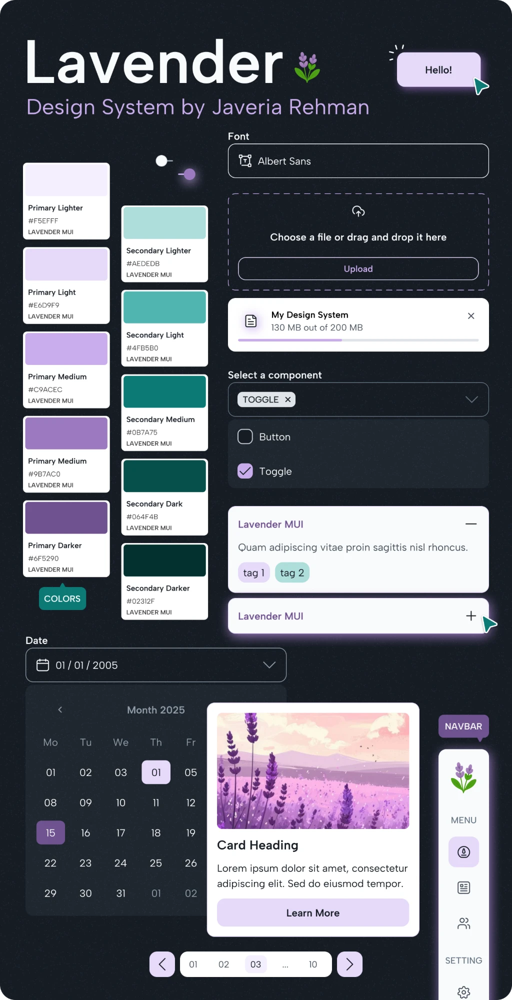
Gambit Create is a web app for generating marketing images and videos from a text prompt. Users describe what they want, add references with @, choose a model, aspect ratio and collection, and bring in products from their own catalog. I designed a focused dark interface across the home screen, the prompt and generating states, and the product picker.
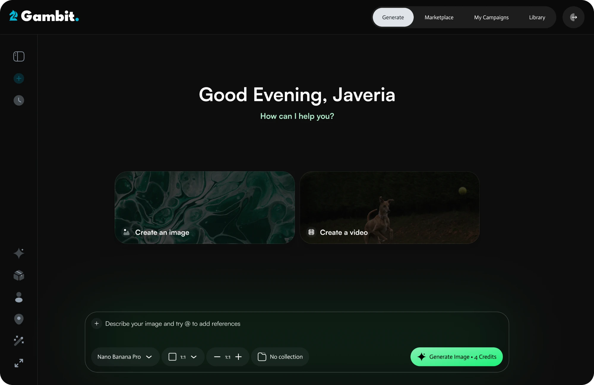
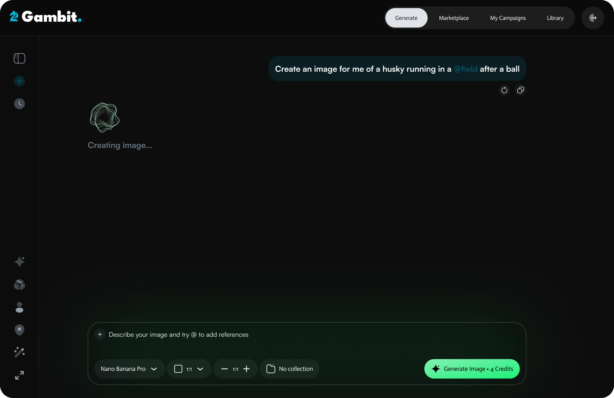
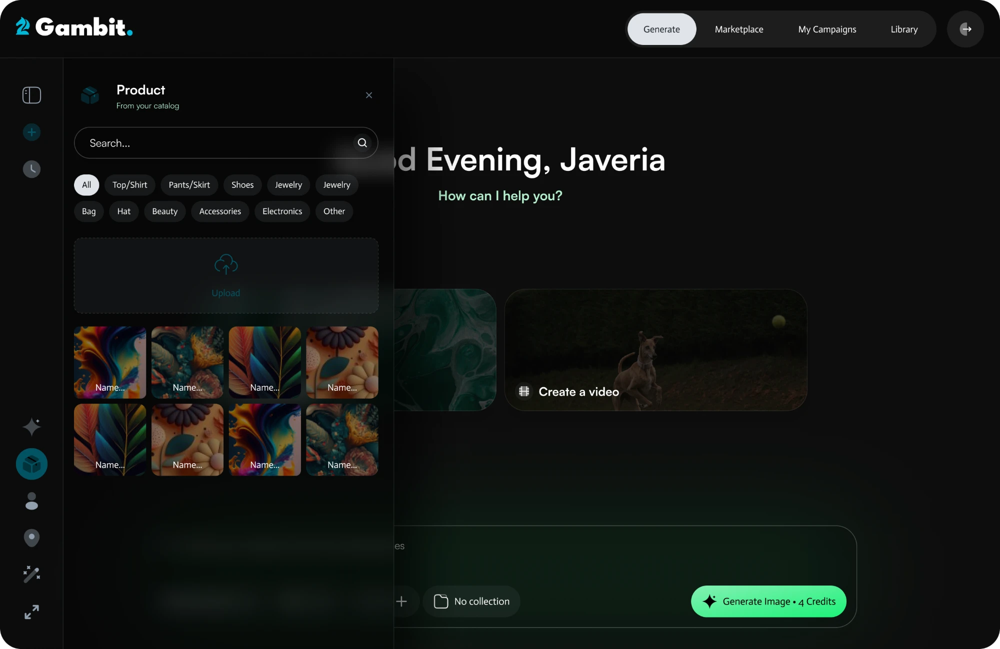
Gambit Docs is a web platform for firms that work with large volumes of documents. Teams upload files, then convert, compare and summarise them, check for conflicts and generate cost estimates, while an overview dashboard tracks activity across the firm and a people area manages accounts and roles. I designed the desktop experience and a responsive mobile version, including navigation, dashboards and data tables.
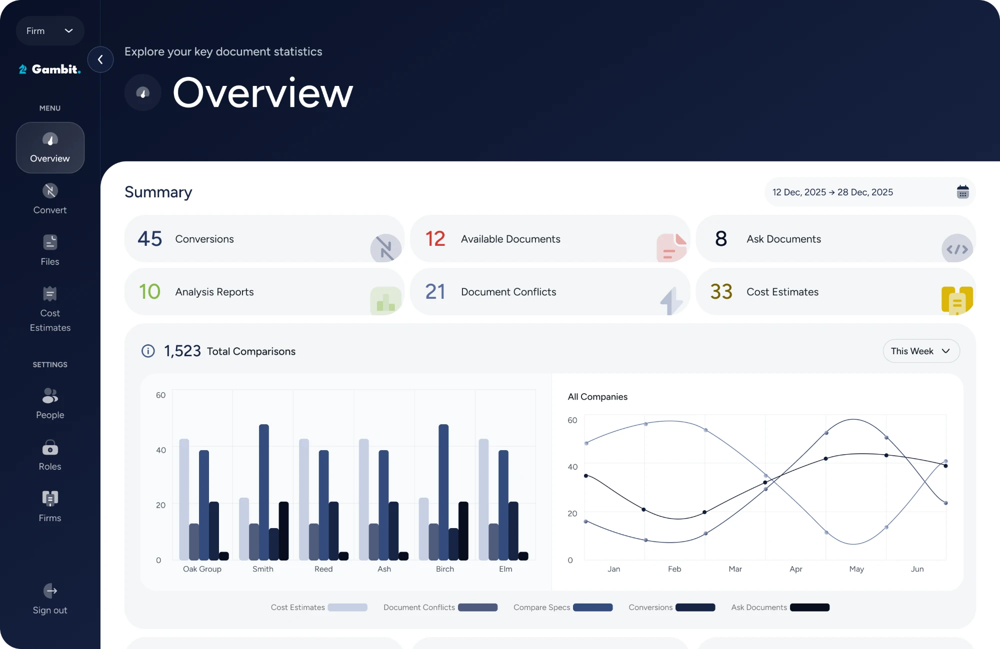
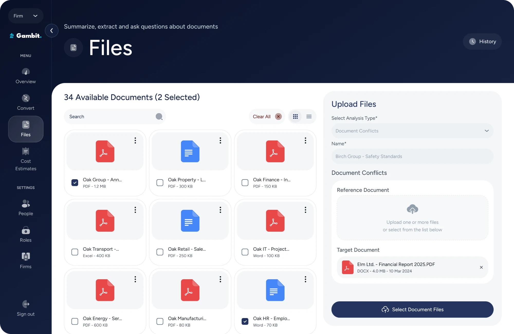
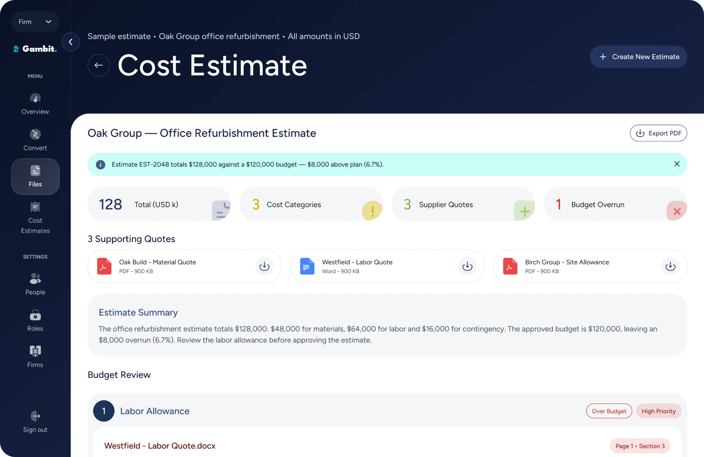
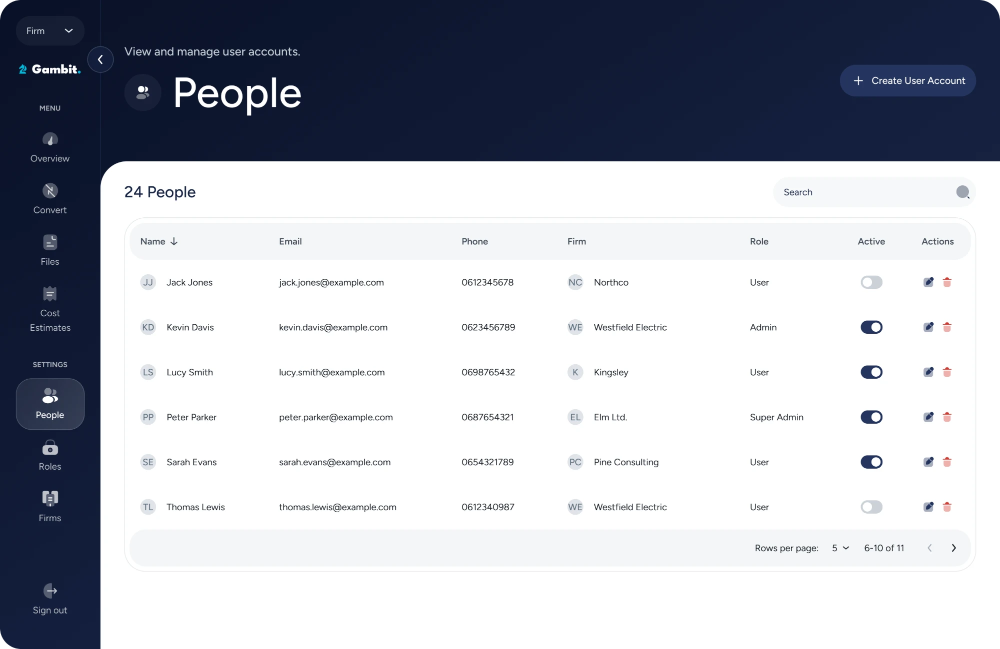
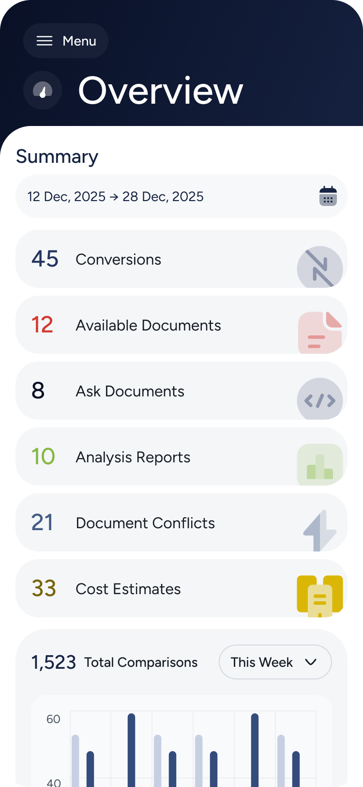
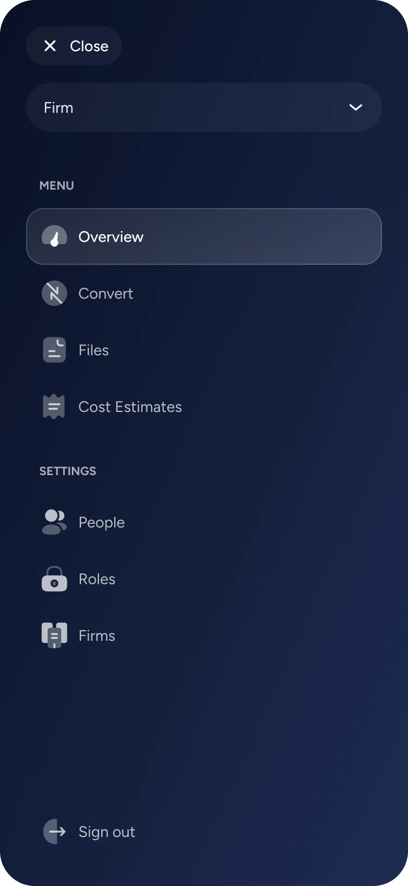
One sentence on the problem, one on what you did, one on the result. Add your designs here.
View case study →The company website for Melior, designed as a single page that introduces its services, specialisations, results and case studies, and leads visitors to a clear call to action to get in touch. I designed the layout and visual style: a dark theme with orange accents and a fine grid-line motif that ties the sections together.
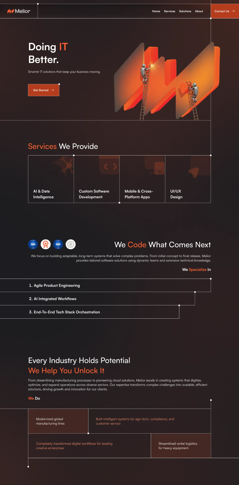
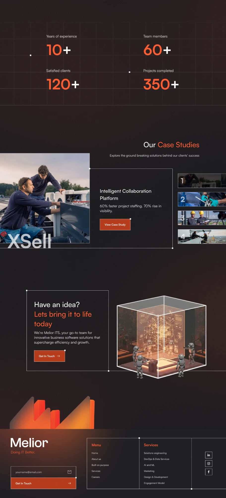
Contact
Open to new projects and good conversations.
javeriarehman16@gmail.com